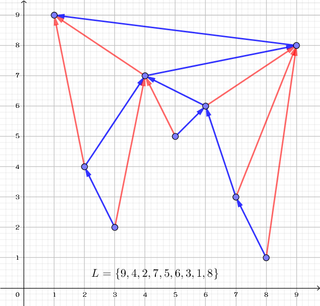
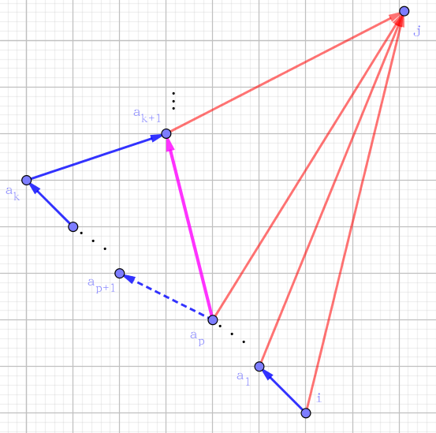
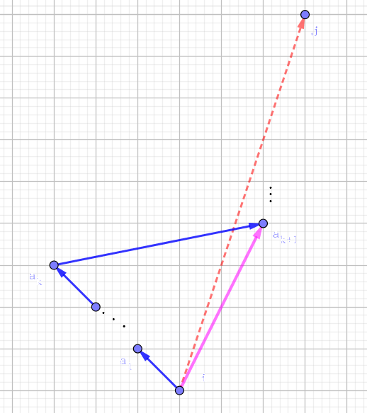

众所周知 scx 是铁道之王。她有一条笔直的铁道 (你可以认为这是一条线段)，上面依次分布了 $1 \sim n$ 共 $n$ 个站点。
每一个站点有一个等级 $L_i$。保证 $L$ 是 $1 \sim n$ 的一个排列。有 $n$ 种列车在铁道上疾驰——你甚至可以忽略行驶的时间，其中第 $i$ 种会在经过的所有等级 $\geq i$ 的站点停下——这时可以上下车。在任何时间点，你可以在任意站点搭乘朝任意方向开的会在这里停留的列车。
由于一些原因，当乘坐的车在某一站停下时，会花费恰好 $1 \texttt s$ 的时间。特别的，在出发点上车以及在目的地下车不需要耗费这 $1 \texttt s$ 时间。你可以认为列车开的太快了，所以每个停靠站你都会下车休息。
接下来的 $Q$ 天中，scx 第 $i$ 天要从 $A_i$ 站前往 $B_i$ 站，她想知道每一天最少需要多少时间。scx 的时间非常宝贵，所以他要你告诉他这些询问的答案。
为了做题人的身体健康，题目保证 $L_1 = n, L_n = n-1$。
第一行包含两个正整数 $n, Q$ ($n, Q \leq 10^5$)。
第二行包含 $n$ 个正整数 $L_1, L_2, \cdots, L_n$。
接下来 $Q$ 行，第 $i$ 行包含两个正整数 $A_i, B_i$，表示第 $i$ 组询问。
对于每组询问，输出一行一个整数，表示最少需要的时间。
先声明一下，如果存在一种列车，它的相邻站点为 $i, j$，那么我们在图中将 $i, j$ 连边。
容易发现，对于点 $i$ ($1 < i < n$)，记它左数第一个 $L$ 比它大的位置为 $l_i$ (即 $l_i = \max\limits_{j < i, L_j > L_i} j$)，右数为 $r_i$，则 $i$ 和 $l_i$ 有边相连，$i$ 和 $r_i$ 也有边相连，并且 $i$ 不再和其它 $L_j > L_i$ 的 $j$ 相连。
对于 $i = 1$ 或 $i = n$，其中还有 $1$ 和 $n$ 相连。那么整张图一共有 $2n - 3$ 条边，发现并不好处理。
那么我们如果按照满足 $L_j$ 单调递减的顺序来作图，可以发现，作出来的是一张弦图兼平面图，且每个点有两条 "向上" 的边，如下图：
此时，我们将一个点的两条向上的边中，靠下的 (即 $L_j$ 较小的) 一条边作为重 (zhòng) 边 (在图中显示为蓝色，$1$ 和 $n$ 也连重边)，那么所有 $n-1$ 条的重边组成一棵树，约定接下来的 "祖先"、"子孙" 等术语均用在由重边组成的树上。再记剩下的 $n-2$ 条边为轻边 (在图中显示为红色)。
可以发现轻重边的一些性质：
对于每条轻边 $(i, j)$ ($i$ 指向 $j$)，它一定是从一个子孙节点指向祖先节点，该性质显然，证略。
记有轻边 $(i, j)$，且 $i$ 到 $j$ 的路径为 $i, a_1, a_2, \cdots, a_x, j$，则从 $a_1, a_2, \cdots, a_{x-1}$ 出发的轻边均指向 $j$。
证明：对于每条边 $(i, j)$，我们赋予一个方向。若 $j < i$，我们称它为 "L 边"，否则我们称它为 "R 边"，可以发现 "L 边" ("R 边") 在图中都是向左 (右) 上方指的。
由对称性，不妨设 (题中的) $(i, j)$ 为 "R 边"，且 $k$ ($1 \leq k \leq x$) 是使得 "$(a_k, a_{k+1})$ 是 R 边" 的最小 $k$，我们证明 $k = x$。否则，如果 $a_{k+1} < i$，则存在 $p$ 使得 $a_{p+1} < a_{k+1} < a_p$，如下图。则此时，从 $a_p$ 出发的重边应该指向 $a_{k+1}$ 而不是 $a_{p+1}$：
如果 $i < a_{k+1} < j$ (显然 $a_{k+1}$ 不能大于 $j$)，则从 $i$ 出发的轻边应该指向 $a_{k+1}$ 而不是 $j$，如下图：
 i 的 R 边" />考虑题目所求的两点间 $i, j$ 的最短路，记 $k$ 为 $i$ 和 $j$ 的最近公共祖先，显然这两个点一定是先贪心地跳轻边，最后爬爬重边或跳上去什么的直接一个 bfs() 就行了。这些过程都可以用树上倍增解决。
总时间复杂度为 $O \left( (n + m) \log n \right)$。
#include <bits/stdc++.h>
#define N 100034
#define LN 18
#define next scx0
#define stack scx1
using namespace std;
int n, m, i;
int u, v, w, ans;
int l[N], stack[N], top;
int scx[2][N], *p = scx[0], *q = scx[1];
int P[LN][N], Q[LN][N];
int first[N], next[N], dep[N];
int dis[N], que[N];
inline void addedge(int x, int px) {next[x] = first[px]; first[px] = x;}
inline void link(int x, int px) {scx[next[x]++][x] = px;}
void getParents(){
int i; l[0] = INT_MAX;
stack[1] = top = 1; // stack method
for(i = 2; i <= n; ++i){
for(; top && l[stack[top]] < l[i]; --top) link(stack[top], i);
link(i, stack[top]); stack[++top] = i;
}
for(i = 2; i <= n; ++i){
if(l[p[i]] > l[q[i]]) swap(p[i], q[i]);
addedge(i, P[0][i] = p[i]); Q[0][i] = q[i];
}
dep[1] = 1;
}
void dfs(int x){
int i, y;
for(i = 0; i < LN - 1; ++i){
P[i + 1][x] = P[i][P[i][x]];
Q[i + 1][x] = Q[i][Q[i][x]];
}
for(y = first[x]; y; y = next[y]){
dep[y] = dep[x] + 1; dfs(y);
}
}
int LCA(int x, int y){
int i;
if(dep[x] < dep[y]) swap(x, y);
for(i = LN - 1; i >= 0; --i)
if(dep[x] - (1 << i) >= dep[y])
x = P[i][x];
if(x == y) return x;
for(i = LN - 1; i >= 0; --i)
if(P[i][x] != P[i][y]){
x = P[i][x]; y = P[i][y];
}
return p[x];
}
int bfs(int si, int ti){
int h, t = 2, i, x, y, ret; if(si == ti) return 0;
que[0] = si; que[1] = ti; dis[si] = dis[ti] = 0;
for(h = 0; h < t; ++h){
x = que[h];
for(i = 0; i < 2; ++i){
if((y = scx[i][x]) && ~dis[y]){
for(ret = dis[x] + dis[y] + 1, h = 0; h < t; ++h) dis[que[h]] = -1;
return ret;
}
dis[y] = dis[x] + 1;
que[t++] = y;
}
}
return 0x131a371;
}
int main(){
scanf("%d%d", &n, &m);
for(i = 1; i <= n; ++i) scanf("%d", l + i);
getParents();
dfs(1);
memset(dis, -1, sizeof dis);
for(; m; --m){
scanf("%d%d", &u, &v);
if(u == v) {putchar(48); putchar(32); continue;}
w = LCA(u, v); ans = 0;
for(i = LN - 1; i >= 0; --i){
if(dep[Q[i][u]] >= dep[w]) {u = Q[i][u]; ans += 1 << i;}
if(dep[Q[i][v]] >= dep[w]) {v = Q[i][v]; ans += 1 << i;}
}
printf("%d\n", --ans + bfs(u, v));
}
return 0;
}
坑1：注意最后 bfs() 的时候要使用双向 bfs，不然很可能因为边数太多而 TLE。